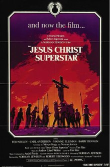
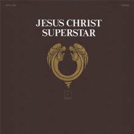
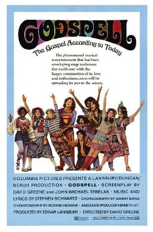
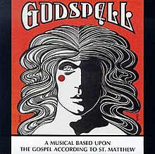

Course: Jesus in the Movies
Lecture #5: Superstar & Godspell (1973)
Norman Jewison's Jesus Christ, Superstar and David Greene's Godspell (both 1973) actualized another alternative for bringing Jesus and his story to the screen. Both films presented a singing Jesus supported by a choral cast, and each film was based on a previously staged musical of the same name.
Andrew Lloyd Webber and Tim Rice, the youthful English composers of Superstar, and John -Michael Tebelak, the young American originator of Godspell, may not have been directly related to the Jesus movement, but they were certainly sensitive to their contemporaries and the cultural forces that shaped them in the 60's.
Jesus Christ, Superstar


Jesus Christ, Superstar began as a single song by that name. It was later released as a 2-disk record album. In the fall of 1971, the rock opera was elaborately produced for the stage at the Mark Hellinger theatre in NY city. the original star, Jeff Fenholt, is today a T. V. evangelist. When it opened, police patrolled outside as pickets marched with signs of protest.
Years later-in 1987-, after establishing himself with Broadway hits like Cats, A. L. Webber recalled the basic question underlying Superstar: The question being "Did Judas Iscariot have God on his side?. . .how much was the whole thing in the end an accident or what was necessary given the politics of the day?"
Norman Jewison, having just done "Fiddler on the Roof" (1971) wanted to bring "Superstar" to the screen. The film was shot in the summer and fall of 1972 in Israel on a 3 1/2-million-dollar budget. He used both ancient sites and modern things in startling ways: an army tank here, a modern scaffolding, a temple sign in Arabic and English reading "money Changer". Ted Neeley and Carl Anderson were cast as Jesus and Judas respectively, with Yvonne Elliman as Mary Magdalene.
"Superstar" opens with a company of actors riding a bus with a large cross on the top, out into the Israeli desert where the staging of the story takes place. The story has the scope of a passion play since it focuses on the last week of Jesus' life. Tho it uses all four gospels, the gospel of John provides much of the dramatic structure.
SHOW SCENE 1- to when Judas walks away from bus. 3 1/2 min.
Among other events are the conspiracy under the leadership of Caiaphas, the anointing at Bethany by Mary Magdalene, appearance before both Pilate and Herod (Luke only). Jesus verbalizes 3 of the 7 words from the cross, none from John. There is no tomb--full or empty--and no resurrection appearances.
THE PORTRAYAL: Jesus as superstar
Jesus is the star, but Judas and Mary Magdalene have greatly expanded roles including the "passions" of Mary and Judas. Judas is concerned that Jesus is actually, beginning to believe the things people are saying about him and he is afraid it will call down the retribution of Rome. We are given a retrospective glance of Jesus ministry thru the eyes and voice of Judas. [show scene 3, 1 1/2 min
While Judas accuses, Mary Magdalene comforts Jesus by anointing him with oil and singing "Everything’s all right". Show scene 4, 3 min, 40 sec.
Later, while Jesus sleeps, she sings the most popular song from the play "I don't know how to love him". Show scene 20, 3 1/2 mins.
Before his own suicide, Judas echoes these same words. They also agree that "he's a man, he's just a man."
These expanded roles of Judas and Mary Magdalene, and their assessments of Jesus do not detract from, but enhance the characterization of Jesus himself. a man caught between expectations of his contemporaries and the demand of God.
In spite of the film's occasional artistic excesses, the scene of Jesus in Gethsemane is profoundly moving and far removed from the plastic poses and perfunctory lines in other Jesus films. Let’s watch from the Last supper scene thru the Gethsemane scene when Judas kisses him. Show SCENES 12-13, 13 MIN.
This portrayal of Jesus as a man with limited understanding may confound some traditional, read fundamentalist, biblical and theological viewpoints, but it heightens the degree of Jesus' faithfulness. Jesus remains faithful to his divine call in spite of his lack of understanding.
Just as Jesus in the garden interrogates God before his death, Judas after his own death interrogates Jesus--from on high, accompanied by a chorus singing superstar. Neither Jesus or Judas receives answers to their ultimate questions Show/scene 22, 4 min
The movie ends with the crucifixion and the actors boarding the same bus. As they board over their shoulders at the place where the play was performed. Ted Neeley, who played Jesus, is missing. We then see a solitary cross on a hilltop as the sun sets. In a shot reminiscent of Ben Hur we see a shepherd with a flock moving in the shadows from left to right. Show SCENE 23, 5 1/2 mins. @ 35 min total
GODSPELL


GODSPELL (old English for gospel) developed out of John-Michael Tebelak's master’s thesis at Carnegie Tech (now Carnegie Melon) university, in Pittsburg. The original play resulted from an experience of going to church for Easter vigil while working on his thesis.
He went to the Anglican Cathedral expecting a great experience and found the people bored, the clergymen seeming to hurry to get it over with. He left with a feeling that instead of rolling the stone away, they were pilling it on. He went home and worked in a non-stop frenzy to complete his manuscript.
It ran off-Broadway for a while and then reopened with a musical score and lyrics by Stephen Swartz in May 1971 with considerably less fanfare than would accompany "Superstar" a few months later.
Tebelak assessed the musical in these words: "The Church has become so dour and pessimistic, it has to reclaim its joy and hope. I see "Godspell" as a celebration of life. One way this celebration could continue beyond NY was its adaption to the screen. Unlike "Superstar" which went to Israel to film, "Godspell" was filmed in New York City.
The role of Jesus was given to Victor Garber who wore a clown suit. The camera moves around with 9 other actors, both male and female and black and white, to sites that are familia in NY. The Brooklyn Bridge, Central Park, the Lincoln Center the World trade center, Times square all make sites for this film. It was filmed in the fall of 1972 and released thru Columbia Pictures.
THE MUSICAL: Like Superstar, Godspell tells the Jesus story as a play within a play.
The play begins with John the Baptist singing "Prepare ye the way of the Lord." He summons 8 young people from their daily tasks and they reflect ethnic and gender inclusiveness. SHOW SCENE 3,3 mins. -hit pause
"GODSPELL" takes up the Jesus story at the outset of his public ministry drawing on the synoptic gospels. This one claims to be based on the Gospel of Matthew. Most the events come from that gospel with the execution being by electrocution, not crucifixion.
What really sets this cinematic portrayal of Jesus apart from ALL other Jesus films, is its abundant use, and creative presentation, of Jesus' teachings and Parables. These parables are derived not only from Matthew, but Luke and Mark as well. The nine, not twelve, disciples who make up Jesus' traveling company act out the parables using song, word and mime. SHOW SCENES 4 & 5 THRU "DAY BY DAY". 15 mins cut 'Day by Day" if running behind
There are two delineated parts, unlike Matthews gospel with 5. Part one opens, as noted, with John the Baptist (not the infancy narrative). This section contains the parables and many great songs.
The transition between parts occurs on a pier on the New York waterfront. A robot monster appears stylistically representing the threat of the Jewish authorities. This robot mouths the words of some of the conflict stories from Mark 11-12. This interrupts the idyllic romp of Jesus and his company. The song "Alas, alas for you Lawyers and pharisees, Hypocrites that you be" ends the transition. SHOW SCENES 10-11 THRU "Alas for you" 6 min 20sec. cut if not time
Part 2 opens with the return of Jesus and his followers to the junkyard where they become sad and must prepare for his leave taking. They sing "by your Side". Show SCENE 12, 4 MINS.
The police arrive, thanks to Judas, and Jesus dies on a chain link fence by electrocution. As day breaks, the faithful including Judas--bear Jesus cruciform body into the city singing "Long live God" and wearing their everyday guises, disappear into the crowds that suddenly appear on Park Avenue. SCENES 14 AND 15, 15 MIN. TOTAL CLIPS @ 43 MINUTES
Like its counterpart, "Superstar", "Godspell" ends with Jesus’ death. Whatever resurrection occurs does so in the transformed lives of the participants of the drama. Both of these dramas imply an existentialist understanding of the resurrection.
This is consistent with Rudolf Bultmann, the great biblical theologian and scholar, who proposed that whatever resurrection does occur does so in the lives of those involved. In an article written in 1941, "The New Testament and Mythology" Bultmann understood resurrection to be NOT an occurrence that happened to the dead Jesus, but a happening in the lives of people of all generations as faith rises in them in response to the churches’ proclamation about Jesus.
THE PORTRAYAL: Jesus as Hippie
Jesus character in "Godspell" appears in a superman shirt, striped trousers, and the makeup of a clown. He has no beard, but his curly hair stands like a halo around his head.
This cinematic portrayal of Jesus as a clown had precedent. At the NY World’s fair in the 1960's, at the Protestant-Orthodox pavilion, sponsored by the protestant council of NY, Rolf Forsberg's brief 22-minute film "Parable" (1964) used a white-faced, white cloaked clown moving thru the "great circus of life" as “a man who dared to be different". It was mime, no dialogue and was more allegory than a parable.
The film stirred up controversy and, of course, the film became popular throughout the duration of the fair and circulated widely in church circles for years thereafter. This helped prepare the public for "Godspell".
Like Jesus in the synoptics, "Godspell" has Jesus in the film generally avoid self-referential statements about himself as Christ, son of man or son of God. Like the synoptics, the Parable is the most used form of teaching thus proclaiming the "Kingdom of God" or "Kingdom of Heaven" (Matt.)
Consequently, as expressed in word and action, GOD--not Jesus himself-- constitutes the theological center of "Godspell".
Jesus is portrayed in "Godspell" as a "hippie". In this film, Jesus and his followers have separated themselves from New York society. The streets stand empty during their travels about town. The junkyard becomes their haven. therefore, this "Godspell" leaves unanswered the question of why this Jesus came to be put to death. Pharisees are condemned by name in the film and seem to represent the principal opponents to Jesus.
Although Judas acts out his obligatory role as betrayer, neither Caiaphas nor Pilate has a part in the story. Jesus seemingly dies simply because that is the way the story ends.
"Superstar" portrays Jesus as a man, but a man elevated by his public performance to fame and superstardom. On the other hand, "Godspell" portrays Jesus as a playful clown who does not perform before public audiences but drops out of society for the amusement of himself and his friends. (much like the last part of John's gospel)
THE RESPONSE: Entertainment blockbusters
"Superstar" returned more than twelve million dollars in rentals, the film "Godspell" less than one million. In spite of this difference in receipts, both musicals, in their varied cultural incarnations as films, plays, albums, solo records, represent enormous commercial success for the many layered entertainment industry. "Godspell" continues to be performed as a musical play around the country by churches, schools, and community theatre groups.
"Superstar" recently experienced a stage revival in NYC and was taken on the road (came to Albuquerque with Ted Neeley and Carl Anderson). The tour was billed as the 25th anniversary tour.
The commercial success of both these musicals, with their differing portrayals of Jesus, may stem more from "how" the Jesus story is told instead of "what" the story is about. In the 1960's, the issue of the relationship between medium and message in the dawning age of mass communication was addressed in Marshall Macluhan's book "Understanding Media". The slogan became "the medium is the message."
By the 1970's the concern was not whether Jesus’ ought to be shown on film, nor whether the Jesus story had been told reverently on film, but the extent to which these two films had made Jesus over into images of the youth generation.
Several film critics found "Godspell" to be an engaging film experience, but a film with little relationship to the Jesus of the gospels. Thus, it was seen by some as a statement about the 1960's generation, not about the Christian gospels.
The Jesuit magazine "America" (moira Walsh again) who had so strongly dismissed the Jesus epics of the 1960's, commented that it seemed to stroke the self-congratulatory reflexes of the drop-out flower children. But she ended up on a positive note: "you even come away temporarily loving your neighbors in the theatre, and maybe that is not such a bad beginning of a Christian message."
The Protestant magazine "Christianity Today" found some biblical problems but praised Columbia pictures for bring this "infectious musical" to the screen and praised its portrayal of the "free frolicking joy of following Christ."
The more liberal "Christian Century" said that this movie "accomplishes something I have never seen in a biblical film: it portrays Jesus in a first century setting with 20th century sensitivity. " and "it is superb cinema, stimulating theology, and in no way antisemitic."
"Christianity Today", which is quite conservative, though likening "Godspell" did not like "Superstar" The reviewer says, "though a theological disaster, has become an ecumenical triumph". She comments that "Jesus, played by Ted Neely, looks and acts incompetent, insecure, and petulant" she calls the film an ecumenical triumph because of the diverse religious groups that had condemned it. "protestants, Catholics, Jews for Jesus and Jews for Judaism...."
Ironically, Walsh in "America" found "Superstar" more to her liking then "Godspell". She acknowledged the possible antisemitism, and concern about a black actor playing Judas but appreciated the "attempt by two young agnostics, Tim Rice and Andrew Webber, to express their bemused admiration for the life and teachings of Jesus in terms that are comprehensible to them."
Thus, the critical assessments of both films were sharply divided. Reviewers were seldom indifferent. In the secular press, Time hated Godspell but claimed "Superstar" had reverence, taste, good vibes, and it really rocks out."
"Newsweek" took the opposite view saying "Godspell" had a few strong points" but Superstar was "one of the true fiascoes of modern cinema"
Both films projected onto the screen images of Jesus never seen before. This was possible because in 1966 Jack Valenti, special assistant to LBJ, accepted an invitation to become head of the Motion Picture Ass. of America (MPAA).
Two years later the MPAA finally replaced the Production Code, by which the film industry had regulated itself since 1930, with a rating system based upon age levels. This is the one that has been used ever since
Thus, both "Godspell" and "Superstar" received G ratings when they came out. This made possible "Life of Brian" in 1979 which, though rated R, was still shown.
Also, Passover Plot in 1976 based on Hugh Schonfields 1966 book.